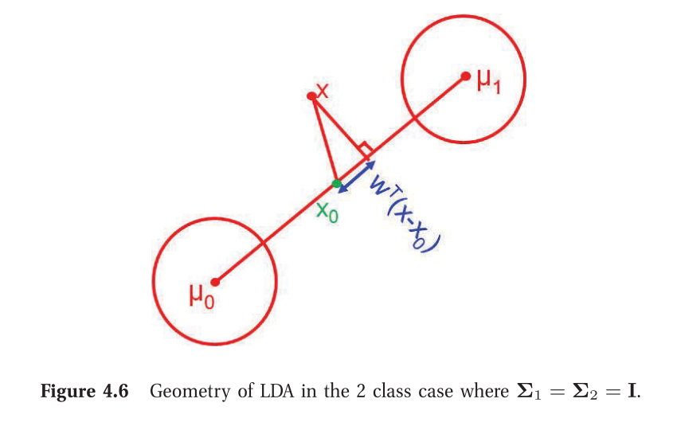

Chapter 4 - Gaussian Models
-
Multivariate Normal (MVN) in D-dimension:
N(x∣μ,Σ)≜(2π)D/2∣Σ∣1/21exp[−21(x−μ)TΣ−1(x−μ)]
-
We can estimate the parameters of the Gaussian using MLE:
μ^mleΣ^mle=N1i=1∑Nxi≜x=N1i=1∑N(xi−x)(xi−x)T=N1(i=1∑NxixiT)−xxT
- Given a specified mean and covariance, the multivariate Gaussian is the distribution with maximum entropy.
Gaussian Discriminant Analysis
-
Imagine a generative classifier, where the features x are continuous and assumed to have class-conditional distributions that are MVN.
p(x∣y=c,θ)=N(x∣μc,Σc)
-
Note that if Σc is diagonal, then this corresponds to the Naive Bayes classifier where the features are continuous.
-
For a generative classifier, we select the class that has maximum posterior prob, i.e., p(y=c∣x,π,θc) = class_prior x class-conditional_likelihood
(π corresponds to the categorical distribution of y - histogram of the data across the the different classes)
-
Written in log-space,
c^=y^(x)=cargmax[logp(y=c∣π)+logp(x∣θc)]
-
If we have a uniform prior over the classes, we can ignore the 1st term. Hence,
c^=y^(x)=cargmin(x−μc)TΣc−1(x−μc)
-
Essentially, each datapoint is assigned to the class, based on Mahalanobis distance with the class mean (distribution centroid). Refer definition of Mahalanobis distance - Wikipedia.
Quadratic Discriminant Analysis
From Bayes rule,
p(y=c∣x,θ)∝logp(y=c∣π)×logp(x∣θc)
Assuming prior to be Cat(πc) and Gaussian class conditionals,
p(y=c∣x,θ)∝πc∣2πΣc∣−21exp[−21(x−μc)TΣc−1(x−μc)]
Linear Discriminant Analysis
Note that in the above case, each Gaussian is assumed to have its own mean μc and covariance Σc
We can simplify this by making an assumption that the covariance matrices are the same across classes.
p(y=c∣x,θ)∝πcexp[μcTΣ−1x−21xTΣ−1x−21μcTΣ−1μc]=exp[μcTΣ−1x−21μcTΣ−1μc+logπc]exp[−21xTΣ−1x]
Note that the second exp term (xTΣ−1x - the quadratic term) is independent of the class c. Hence, in the bayes formula, it gets cancelled out from the numerator and denominator.
Let’s define βc to be the coefficient of x and γc to be the constant term:
γcβc=−21μcTΣ−1μc+logπc=Σ−1μc
Then we can write the posterior as:
p(y=c∣x,θ)=∑c′eβc′Tx+γc′eβcTx+γc
This is exactly the softmax function. Hence LDA is essentially a single hidden layer feed forward NN without any activation function. It is called linear discriminant analysis since the quadratic term gets cancelled and there is only a linear decision boundary between the classes (βcTx+γc). This is called multi-class logistic regression,or multinomial logistic regression (also called maximum entropy classifier in NLP).
The difference between Binary Logistic regression (BLR) vs Linear Discriminant analysis (with 2 groups: also known as Fisher’s LDA):
Logistic regression vs. LDA as two-class classifiers - Cross Validated
2-class LDA tries to maximize the distance between the means of the two categories while simultaneously minimizing the scatter (or std dev) within each categor. Watch YouTube Video Explanation. Note that in contrast, PCA tries to find the directions which accounts for the maximum variation in the data (without having access to the class labels).
2-class LDA procedure:
- Find x0 which is the centre of the line joining the means
- For a new data point x, project it on to the line (wTx) and check if it is on the right or left of x0, (by looking at the sign of wT(x−x0)) and make the classification.

Inference in jointly Gaussian distributions
Given a joint distribution, p(x1,x2), it is useful to be able to compute marginals p(x1) and conditionals p(x1∣x2).
μ=(μ1μ2),Σ=(Σ11Σ21Σ12Σ22)
Then the marginals are given by:
p(x1)p(x2)=N(x1∣μ1,Σ11)=N(x2∣μ2,Σ22)
i.e., simply compute the the mean and covariance of each of the random variables separately.
and the posterior conditional is given by:
p(x1∣x2)=N(x1∣∣∣μ1∣2,Σ1∣2)
where,
μ1∣2=μ1+Σ12Σ22−1(x2−μ2)=μ1−Λ11−1Λ12(x2−μ2)=Σ1∣2(Λ11μ1−Λ12(x2−μ2))
Σ1∣2=Σ11−Σ12Σ22−1Σ21=Λ11−1
the conditional mean is just a linear function of x2, and the conditional covariance is just a constant matrix that is independent of x2.
Note that the marginals and conditionals are also Gaussians.
Linear Gaussian Systems
Suppose we have two variables, x and y.
Let x∈RDx be a hidden variable (unobservable), and y∈RDy be a noisy observation of x.
Let us assume we have the following prior and likelihood:
p(x)p(y∣x)=N(x∣μx,Σx)=N(y∣Ax+b,Σy)
where A is a matrix of size Dy×Dx.
The task that we are interested is how can we infer x given y.
One can show that the posterior p(x∣y) is given by:
p(x∣y)Σx∣y−1μx∣y=N(x∣∣∣μx∣y,Σx∣y)=Σx−1+ATΣy−1A=Σx∣y[ATΣy−1(y−b)+Σx−1μx]
The above result is useful when one need to infer an unknown scalar/vector from noisy measurements.